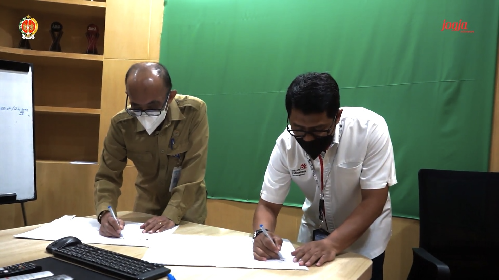

Diskominfo DIY selenggarakan Sosialisasi Internalisasi Gratifikasi, Benturan Kepentingan dan Whistle Blowing System

Yogyakarta – Selasa (19/04/2022) Dinas Kominfo DIY mengadakan sosialisasi internalisasi pemahaman terkait gratifikasi, benturan kepentingan serta whistle blowing system. Sosialisasi dilaksanakan secara hybrid, untuk yang dilakukan secara luring mengambil tempat di Ruang Rapat Bima Diskominfo DIY sedangkan yang daring melalui media zoom meeting. Kegiatan ini dihadiri oleh seluruh ASN di lingkungan Diskominfo DIY serta menghadirkan narasumber Niken Puspitasari, S.E. dari Inspektorat DIY.
Sosialisasi terkait gratifikasi, benturan kepentingan dan whistle blowing system kepada OPD Pemda DIY merupakan bagian dari pelaksanaan good governance. Bangsa Indonesia memiliki tradisi kekeluargaan dan saling memberi. Namun dalam melaksanakannya sebaiknya ASN mematuhi pedoman agar tidak mengarah ke gratifikasi, benturan kepentingan dan whistle blowing system.
Niken Puspitasari kembali mengingatkan mengenai beberapa peraturan yang bisa dipedomani oleh ASN Pemda DIY terkait gratifikasi, benturan kepentingan dan whistle blowing system. Pertama, Peraturan Gubernur DIY No. 105 Tahun 2020 tentang Petunjuk pelaksanaan Penanganan Benturan Kepentingan. Kedua, Peraturan Gubernur DIY No. 57 Tahun 2021 tentang Petunjuk Pelaksanaan Penanganan Gratifikasi. Ketiga, Peraturan Gubernur DIY No. 19 Tahun 2016 tentang Petunjuk Penanganan Whistle Blowing System.
Narasumber memaparkan pengertian dari gratifikasi, benturan kepentingan dan whistle blowing system. Kemudian dilanjutkan dengan diskusi terkait sumber, bentuk serta contoh dari gratifikasi, benturan kepentingan dan whistle blowing system. Terdapat pengecualian terhadap pelaporan gratifikasi diantaranya pemberian dalam keluarga, keuntungan atau bunga dari penempatan dana, investasi atau kepemilikan saham pribadi yang berlaku umum, manfaat dari koperasi, organisasi kepegawaian atau organisasi yang sejenis berdasarkan keanggotaan yang berlaku umum serta hadiah langsung/undian, diskon, voucher, point rewards, atau suvenir yang berlaku umum dan tidak terkait kedinasan. Selain itu disampaikan bagaimana mekanisme sistem pelaporan gratifikasi melalui Unit Pengendali Gratifikasi dan whistle blowing system melalui lapor.jogjaprov.go.id
Seluruh ASN di lingkungan Dinas Kominfo DIY diharapkan memiliki satu kesepahaman terkait gratifikasi, benturan kepentingan dan whistle blowing system.
Comments :
Beberapa Tips Menjadi Youtuber yang Eksis di Google

Yogyakarta – Kamis (16/9/2021) Dinas Komunikasi dan Informatika DIY menyelenggarakan workshop yang berjudul “Tips menjadi Youtuber yang Eksis di Google”. Workshop ini diselenggarakan secara tatap muka yang bertempat di Selasar Srawung Galih, Diskominfo Coworking Space Jl. Brigjen Katamso, Yogyakarta. Kegiatan ini dihadiri oleh mahasiswa di Yogyakarta yang diharapkan dapat menjadi garda terdepan dalam kreativitas digital. Pada kesempatan ini Dinas Komunikasi dan Informatika DIY menghadirkan Didik Arwinsyah, SEO sebagai narasumber.
Didik Arwinsyah, SEO merupakan seorang content creator sekaligus seorang konsultan SEO (Search Engine Optimization) yang berasal dari kota Yogyakarta. Selain itu, beliau juga memiliki bisnis seperti ummy pancake. Didik Arwinsyah telah bergabung pada platform YouTube sejak 27 Maret 2020. Meski baru berusia 1 tahun menjadi seorang content creator, Didik Arwinsyah, SEO mampu bersaing dan tetap eksis dengan jumlah kurang lebih 25.700 subscriber dan viewers yang mencapai 1,111,825.
Dalam kegiatan ini Didik Arwinsyah, SEO menjelaskan beberapa tips yang dapat dilakukan oleh content creator YouTube untuk tetap eksis di google. Terdapat 5 tips yang dapat dilakukan oleh content creator yaitu :
Seorang content creator harus mengetahui algoritma YouTube.
Terdapat dua algoritma YouTube yaitu konten viral dan evergreen. Konten viral yaitu konten yang diunggah dan banyak dilihat oleh masyarakat pada hari yang sama. Sedangkan evergreen merupakan konten yang biasa dicari oleh seseorang menggunakan kata kunci.
Channel YouTube
Dalam membuat channel YouTube hanya terdapat dua fokus yaitu entertain dan edukasi. Selain itu dalam membuat konten, skill yang sangat dibuutuhkan oleh seorang content creator adalah public speaking. Tampilan pada channel YouTube juga harus dibuat menarik.
Persiapan membangun channel YouTube
Dalam membangun channel YouTube seorang content creator harus mempersiapkan foto profil serta nama channel yang dapat meningkatan perhatian penonton atau menggunakan nama pribadi untuk meningkatkan personal branding.
Upload konten YouTube
Durasi video yang dapat diunggah pada platform YouTube terdapat 2 jenis yaitu YouTube Shorts yang berdurasi 1 menit dan YouTube biasa yang berdurasi minimal 5 menit. Selain itu judul pada konten yang diunggah harus menggunakan keyword yang biasa dicari oleh viewers.
Syarat atau hal yang dilarang di platform YouTube
Duplikat konten
Menggunakan music copyright
Comment spam
Saling subscribe.
Menurut pengalaman yang telah dilakukan oleh Didik Arwinsyah, SEO beberapa tips tersebut sangat membantu dirinya dalam meningkatkan engagement. Dengan begitu sebagai generasi muda, mahasiswa diharapkan dapat eksis dalam menciptakan konten yang kreatif, positif, dan kolaboratif yang dapat memajukan bangsa.
comments :
Dinas Komunikasi dan Informatika Mengikuti Monev Komisi Informasi Pusat Tahun 2022

Yogyakarta – Senin (11/10/2021) – Dinas Komunikasi dan Informatika DIY selaku PPID Utama Pemda DIY mengikuti presentasi monev Keterbukaan Informasi Publik (KIP) 2021 secara daring di Gedhong Pracimasana, Kompleks Kepatihan, Danurejan, Yogyakarta. Gubernur DIY, Sri Sultan Hamengku Buwono X sebagai Pembina PPID Pemda DIY memaparkan berbagai inovasi yang telah dijalankan Pemda DIY di hadapan para penanggung jawab Anugerah Keterbukaan Informasi Publik 2021 yang diselenggarakan oleh Komisi Informasi Pusat RI. Pada kesempatan tersebut Gubernur DIY didampingi Sekretaris Daerah DIY, Kepala Dinas Komunikasi dan Informatika, Kepala Dinas Koperasi dan UKM DIY, serta Kepala Bappeda.
Gubernur memaparkan SiBakul sudah dilakukan sejak 2020 lalu. Kegiatan sistem ini memberikan kekuatan baru untuk perputaran dalam pertumbuhan ekonomi DIY pada situasi pandemi ini, yang tadinya tidak kami perkirakan sebelumnya hingga memberi kontribusi sekitar 31,8% pada perputaran ekonomi tahun 2020. Sri Sultan mengungkapkan, sektor UMKM dan pertanian menjadi pendukung perekonomian DIY di saat pariwisata DIY belum dibuka dan para mahasiswa belum kembali berkuliah. Menurut Gubernur DIY, sejak 2020, SiBakul telah membantu sekitar 4.000 lebih UMKM di DIY untuk memasarkan produknya. Jika pemasaran produl UMKM di 2020 hanya untuk Pulau Jawa, kini makin meluas.
Inovasi sistem informasi lainnya yang juga dipaparkan Gubernur DIY adalah Sistem Informasi Penanggulangan Kemiskinan (Simnangkis). Dijelaskan bahwa Pemda DIY telah membangun sebuah jaringan informasi dengan desa dan dinas-dinas terkait penanganan kemiskinan.
“Menyangkut aplikasi Simnangkis, kami juga membangun jaringan dan informasi. Bagaimana sistem penanganan ini merangkum semua data by name by address, menjadi satu data. Sehingga, semua pihak dapat kami konsolidasikan agar tidak kacau. Karena kami juga melakukannya dengan Kementerian Sosial dan Kementerian Desa untuk mendapatkan data berupa NIK lalu kami verifikasi dengan benar,” jelas Gubernur DIY.
Gubernur berharap pada kesempatan ini bisa memberi penjelasan visi keterbukaan publik yang telah dilakukan DIY dengan lebih utuh, sehingga memudahkan dalam melakukan penilaian. Inovasi yang dilakukan oleh Pemda DIY sebagai bagian dari tanggung jawab untuk membangun pemerintah daerah yang akuntabel.
Kepala Dinas Komunikasi dan Informasi DIY, Rony Primanto Hari, menyampaikan dalam penilaian keterbukaan informasi publik 2021 ini cukup banyak aplikasi hasil hasil inovasi Pemda DIY yang ditampilkan untuk dinilai. Beberapa diantaranya yakni Sibakul, Simnangkis, dan aplikasi lainnya yang isinya adalah layanan publik terkait dengan keterbukaan informasi. Tingkatan nilai keterbukaan informasi publik Pemda DIY sudah berada di tingkatan penilaian tertinggi yakni informatif. Namun, saat ini nilai yang diperoleh DIY masih di angka 94 dan diharapkan masih bisa naik lagi.
comments :
Gallery
Perjanjian Kejasama anatra Diskominfo DIY dan PT Telkom Indonesia

Budaya Pemerintahan "SATRIYA"
Skor Kinerja Pemerintahan Naik
Koordinasi Pengelola TIK DIY
Peraih Penghargaan Keterbukaan Informasi

Membangun Masyarakat Bebas HOAX Berbasis Kearifan Lokal